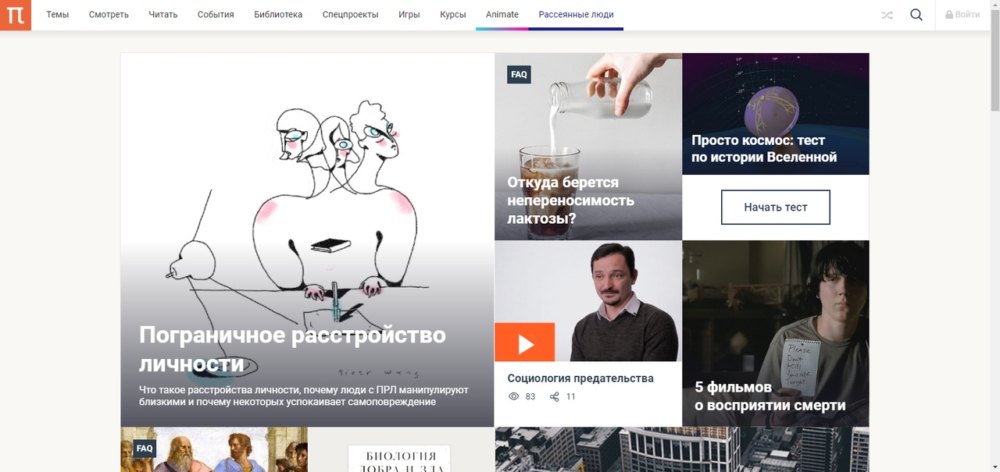

1. «Смартия»
«Смартия» знакомит с актуальными профессиями и подсказывает, как им обучаться. Выбрав заинтересовавшую вас специальность — SMM-специалист, фотограф, веб-дизайнер или другую, — увидите список необходимых для неё умений. Чтобы вы могли освоить их самостоятельно, для каждого умения площадка отображает подборку ссылок на учебные материалы. Хотя «Смартия» ориентируется на русскоязычную аудиторию, часть контента всё же доступна только на английском.
«Смартия» →
2. «ИНТУИТ»
Старейшая образовательная площадка Рунета. Здесь вы найдёте сотни текстовых и видеокурсов на десятки различных тем — от программирования до психологии. Многие курсы подготовлены российскими университетами и крупными международными компаниями вроде Intel и Microsoft. Самостоятельное обучение бесплатное, но желающие могут оплатить услуги персональных наставников.
«ИНТУИТ» →
3. «ПостНаука»
На этом ресурсе публикуют подборки видеолекций, составленные экспертами из разных отраслей и объединённые общими темами. Среди них, к примеру, есть серии «Биоинформатика и геномика», «Культура средневековой Скандинавии» и Cinema Studies о теории кино. Каждая подборка лекций — логически связанная история, рассказанная экспертом от первого лица. Кроме того, на сайте появляются научно-образовательные статьи и тесты на разные темы.
«ПостНаука» →
4. «Лекторий Физтеха»
Проект Московского физико-технического института (Физтеха). С его помощью вы можете смотреть онлайн серии лекций, записанные на видео в этом вузе. В числе доступных предметов — физика, биология, химия, информационные технологии и другие. К некоторым лекциям администрация ресурса прилагает готовые конспекты, которые можно скачивать в PDF-формате.
«Лекторий Физтеха» →
5. «КиберЛенинка»
Электронная научная библиотека открытого доступа. Каталог площадки регулярно обрастает текстами статей из различных научных изданий. Сгруппированные по журналам и рубрикам публикации можно читать онлайн или скачивать целиком в PDF-формате. Проект нацелен на популяризацию науки за счёт открытого доступа к качественной информации.
«КиберЛенинка» →
6. «Newочём»
Команда проекта «Newочём» отбирает самые интересные тексты из англоязычных СМИ и переводит те из них, за которые голосуют участники сообщества «ВКонтакте». По большей части это научно-популярные статьи. Редакторы придумывают лишь заголовки, в остальном содержание переводов соответствует оригиналам. Полные тексты можно читать прямо в социальной сети.
«Newочём» →
7. ITMOcourses
Онлайн-площадка Санкт-Петербургского национального исследовательского университета информационных технологий, механики и оптики (ИТМО). Ресурс предоставляет свободный доступ к курсам, разработанным в этом вузе. Каталог материалов разбит на четыре категории: «Оптические системы и технологии», «Приборостроение и робототехника», «Информационные технологии» и «Биотехнологии». Курсы состоят из видеолекций, интерактивных демонстраций и заданий.
ITMOcourses →
8. InternetUrok
Онлайн-база материалов по основным дисциплинам школьной программы. Информация на сайте структурирована по классам, предметам и темам (урокам). Каждый урок состоит из видеолекций и конспектов. Есть также интерактивные тренажёры и тесты для закрепления пройденного материала. Даже если вы давно окончили школу, возможность повторить программу старших классов всегда может пригодиться.
InternetUrok →
9. Newtonew
Онлайн-медиа об образовании и обучении в широком смысле. Авторы Newtonew пишут об инструментах, заведениях, тактиках и стратегиях, которые помогают учить других и получать новые знания самостоятельно. На этой площадке вы найдёте новости, обзоры, аналитические материалы и колонки экспертов, посвящённые образованию и популярной науке.
Newtonew →
10. Edutainme

Ещё один ресурс об образовании. В отличие от Newtonew, как мне кажется, Edutainme больше ориентируется на представителей индустрии: педагогов, предпринимателей, разработчиков образовательных проектов. Но и любой, кто просто стремится к саморазвитию, найдёт на сайте много полезного и интересного для себя. Например, информацию о новых курсах и образовательных сервисах.
Edutainme →